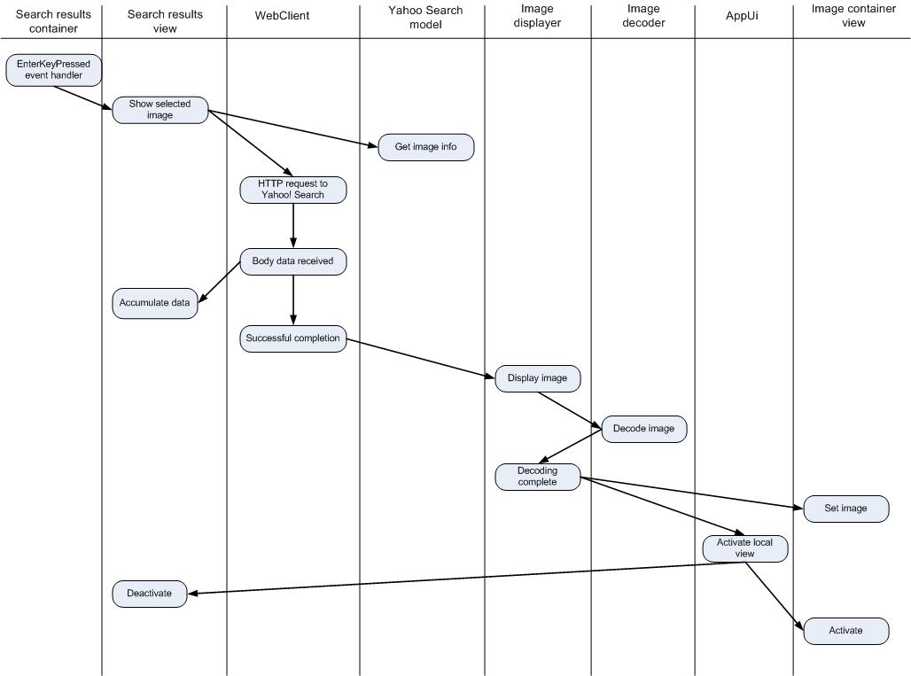

Tutorial: Yahoo! Image Search
This example shows how to use the Carbide.c++ UI Designer for S60 to
define the UI of an application and to implement the "real work" in the
generated code.
The application consists of two screens. The main screen prompts the user to to initiate a search and
displays the list of search results. The second screen displays the Yahoo! provided thumbnail image of
the selected result.
Choose a link to read the following topics:
Adding application logic part 2: download and display selected image
Our application can now prompt the user for a search string, query Yahoo! Image Search, and display
of search results. The next step is to add support for downloading and displaying the selected image.
To do so we will use some new objects. These objects are part of the application logic and are
not generated by the UI Designer.
- CImageDecoder - this is a Symbian class supporting conversion of various image formats
to and from the Symbian CFbsBitmap. CFbsBitmap is the native bitmap object and is what we need to
pass to the image view object used in the image container view. Image decoding is an asynchronous
process requiring the use of Symbian active objects.
- CImageDisplayer - this is the active object, derived from CActive, that we use with
CImageDecoder. It receives notification that image conversion is complete via its RunL()
method.
The diagram below shows, in simplified form, the activity involved in downloading, decoding,
and displaying the selected image.

Figure 1 - Activities involved in downloading, decoding,
and displaying images
Next we'll look at how this behavior is accomplished in Carbide.c++.
- To add application logic when the user clicks the selection key we handle the enterKeyPressed
event on the list box. All GUI controls within the top-level container are owned by that container. In
this case, the list box is owned by CSearchResults, which is derived from CCoeControl. Since
CSearchResults owns the listbox, event handlers are generated in the CImageContainerClass. The
HandleListBoxEnterKeyPressedL() is called to respond to the event. This code calls the
ShowSelectedImageL() method in CSearchResultsView.
- CSearchResultsView::ShowSelectedImageL() retrieves information about the
selected image from CYahooSearchModel and uses the webClient instance to initiate a
download of the thumbnail image.
- As we've previously seen, the wait dialog is handled automatically and the
HandleWebClientBodyReceivedL() method is called in response to the bodyReceivedEvent. In this
case the data is image data and is accumulated into a descriptor in the AppendImageDataL() method.
- When the web client fires the transactionSucceeded event the HandleWebClientTransactionSucceededL()
method is called. It calls the image displayer's DisplayImageL() method, passing in the image data.
- CImageDisplayer::DisplayImageL() initiates the image decoding process. When complete the
RunL() method is called. RunL() passes the resulting bitmap to CImageContainerView, and asks
the AppUi to perform a view switch to the image view.
- With Avkon view switching only one view is active at a time. As the image view container
is created and activate the search results container is destroyed. But the controller, CSearchResultsView
is not destroyed. When the user pushes the Back button, the search results view is re-activated. The
container is re-created and the list repopulated with the existing data from CYahooSearchModel. Since
we'd saved the selected item, that item is reselected as the view activates.